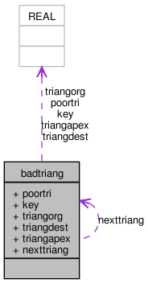

Main Page
Related Pages
Classes
Files
Directories
Class List
Class Index
Class Hierarchy
Class Members
badtriang Struct Reference
Collaboration diagram for badtriang:

[
legend
]
List of all members.
Public Attributes
triangle
poortri
REAL
key
vertex
triangorg
vertex
triangdest
vertex
triangapex
struct
badtriang
*
nexttriang
Detailed Description
Definition at line
561
of file
triangle.cpp
.
The documentation for this struct was generated from the following files:
/tmp/release_2.0/mesh/src/triangle/
triangle.cpp
/tmp/release_2.0/mesh/src/triangle/
triangle_orig.c
Generated by
1.6.2
 1.6.2
1.6.2